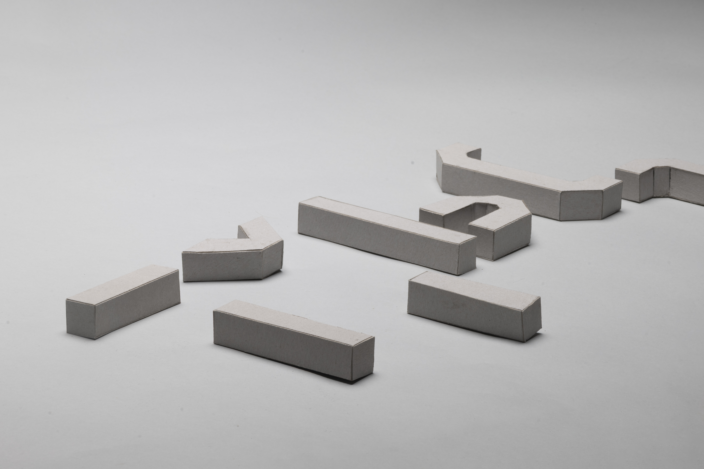
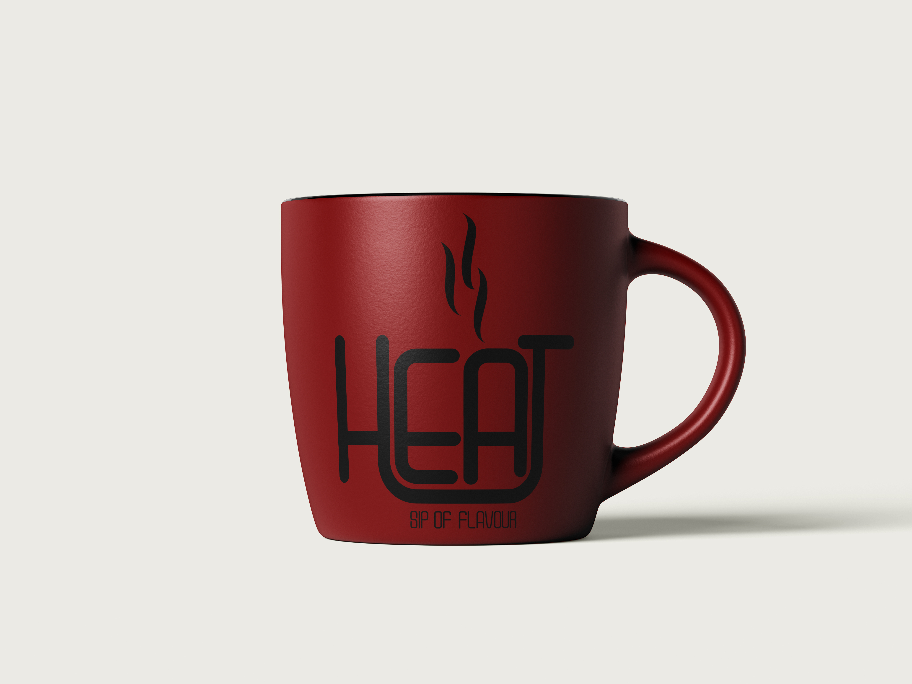

Semantische Typografie
Semantische Typografie Zeitlose Klassiker
Zeitlose Klassiker 24 Stunden
24 Stunden
Impro Bzez Hesch du das scho ghört?
Hesch du das scho ghört?
Heat – Sip of FlavourSchweben
 Einzigartigkeit
Einzigartigkeit Masterabschluss Konzerte
Masterabschluss Konzerte Just Around the CornerSemantische TypografieZeitlose Klassiker24 Stunden
Just Around the CornerSemantische TypografieZeitlose Klassiker24 Stunden
Impro BzezHesch du das scho ghört?
Heat – Sip of FlavourEinzigartigkeitMasterabschluss KonzerteJust Around the CornerMelina Frei
Über mich